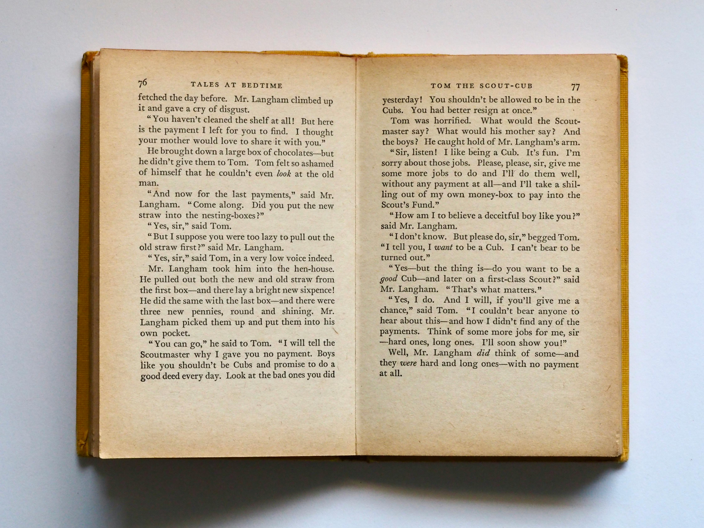

La Feria del Libro en Medellín forma parte de los Eventos del Libro que se realizan cada año bajo la estrategia del Plan de Lectura LEO, con el propósito de convertir a la ciudad en un espacio libre para la palabra y la imaginación. Desde 2025, se integró un cuarto evento: el Festival del Libro Infantil, junto con la Feria Popular Días del Libro, la Parada Juvenil de la Lectura y la Fiesta del Libro y la Cultura
La Fiesta del Libro y la Cultura 2024 atrajo más de 500.000 visitantes y registró ventas por más de 9.148 millones de pesos, con alrededor de 210.000 libros vendidos. El 75 % de los asistentes eran jóvenes (estratos 1 a 3), lo que demuestra su alcance inclusivo y popular
La Feria del Libro en Medellín ya no es un solo evento: es un conjunto de iniciativas gratuitas, con alcance local e internacional, que promueven inclusión, creatividad y comunidad. El enfoque en "El mañana" invita a imaginar futuros posibles a través de la literatura y la cultura, involucrando a niñas, jóvenes y adultos.
| Comprar libros | Mas informacion |
|---|---|
| https://bookshop.org/ | https://fiestadellibroylacultura.com/ |